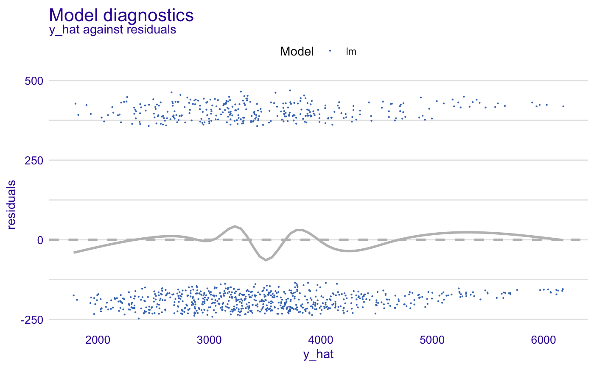
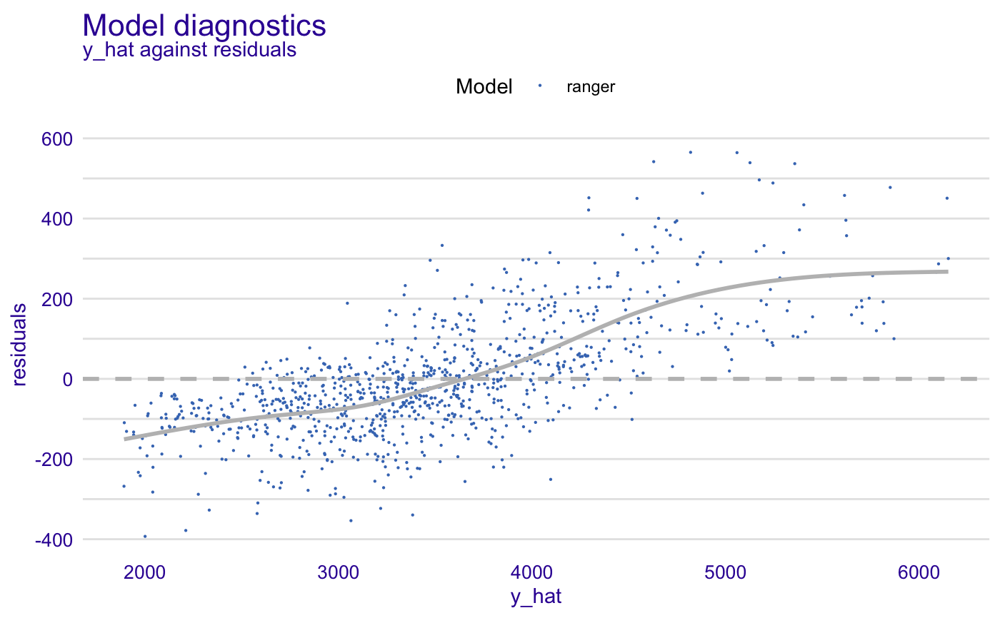
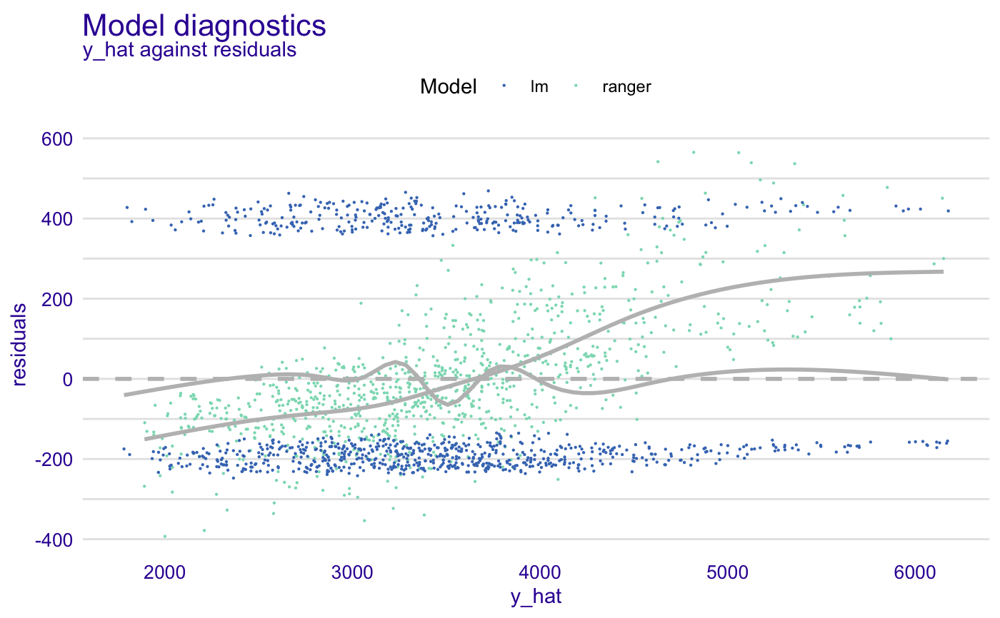
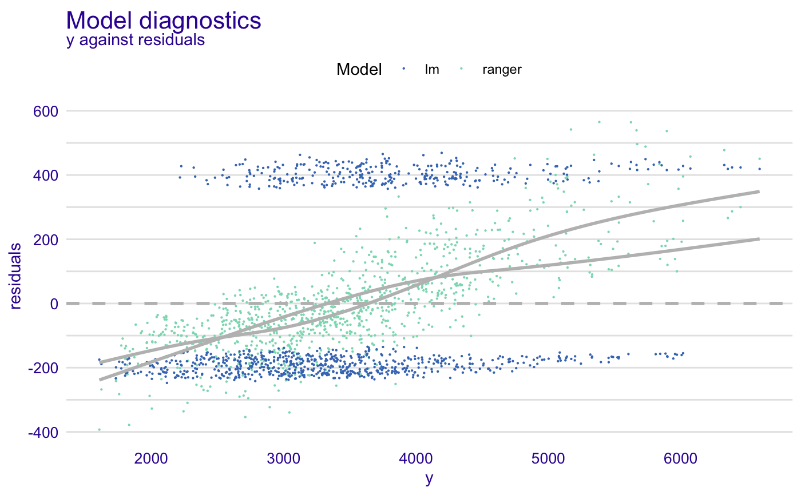
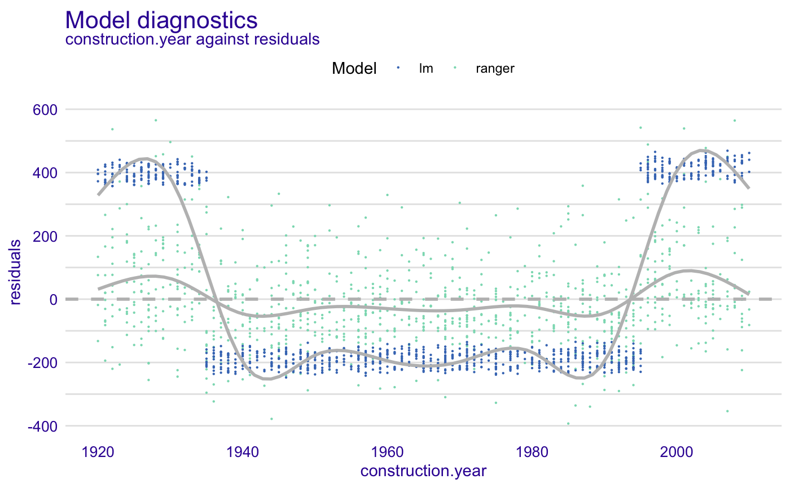
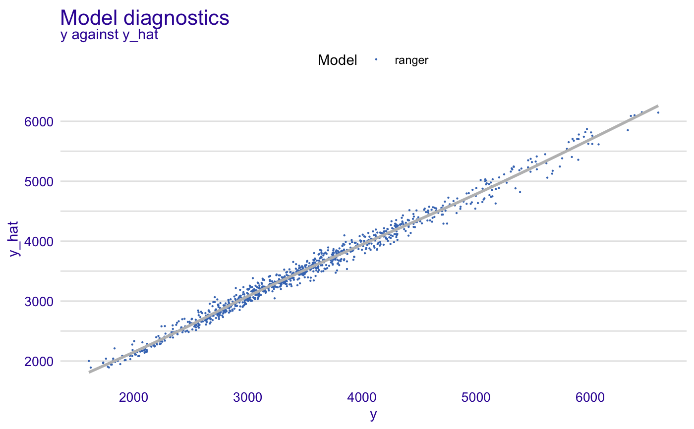
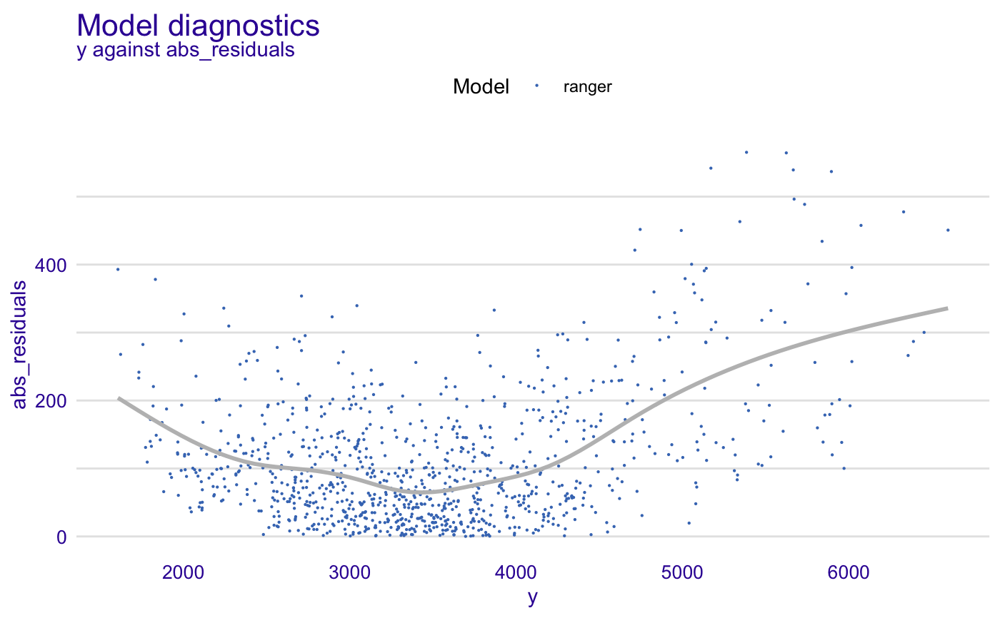
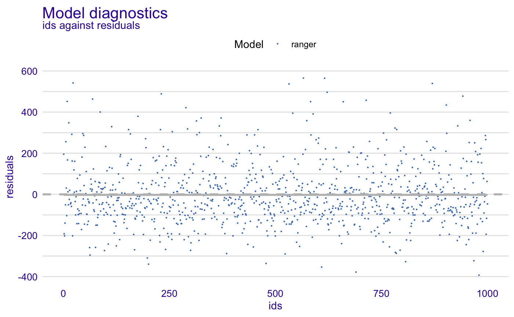

This function performs model diagnostic of residuals. Residuals are calculated and ploted against predictions, true y values or selected variables. Find information how to use this function here: https://pbiecek.github.io/ema/residualDiagnostic.html.
model_diagnostics(explainer, variables = NULL, ...)
| explainer | a model to be explained, preprocessed by the |
|---|---|
| variables | character - name of variables to be explained. Default |
| ... | other parameters |
An object of the class model_diagnostics.
It's a data frame with residuals and selected variables.
Explanatory Model Analysis. Explore, Explain and Examine Predictive Models. https://pbiecek.github.io/ema/
apartments_lm_model <- lm(m2.price ~ ., data = apartments) explainer_lm <- explain(apartments_lm_model, data = apartments, y = apartments$m2.price)#> Preparation of a new explainer is initiated #> -> model label : lm ( default ) #> -> data : 1000 rows 6 cols #> -> target variable : 1000 values #> -> data : A column identical to the target variable `y` has been found in the `data`. ( WARNING ) #> -> data : It is highly recommended to pass `data` without the target variable column #> -> model_info : package stats , ver. 3.6.1 , task regression ( default ) #> -> predict function : yhat.lm will be used ( default ) #> -> predicted values : numerical, min = 1781.848 , mean = 3487.019 , max = 6176.032 #> -> residual function : difference between y and yhat ( default ) #> -> residuals : numerical, min = -247.4728 , mean = 2.093656e-14 , max = 469.0023 #> A new explainer has been created!diag_lm <- model_diagnostics(explainer_lm) diag_lm#> m2.price construction.year surface floor #> Min. :1607 Min. :1920 Min. : 20.00 Min. : 1.000 #> 1st Qu.:2857 1st Qu.:1943 1st Qu.: 53.00 1st Qu.: 3.000 #> Median :3386 Median :1965 Median : 85.50 Median : 6.000 #> Mean :3487 Mean :1965 Mean : 85.59 Mean : 5.623 #> 3rd Qu.:4018 3rd Qu.:1988 3rd Qu.:118.00 3rd Qu.: 8.000 #> Max. :6595 Max. :2010 Max. :150.00 Max. :10.000 #> #> no.rooms district y y_hat #> Min. :1.00 Mokotow :107 Min. :1607 Min. :1782 #> 1st Qu.:2.00 Wola :106 1st Qu.:2857 1st Qu.:2879 #> Median :3.00 Ursus :105 Median :3386 Median :3374 #> Mean :3.36 Ursynow :103 Mean :3487 Mean :3487 #> 3rd Qu.:4.00 Srodmiescie:100 3rd Qu.:4018 3rd Qu.:3932 #> Max. :6.00 Bemowo : 98 Max. :6595 Max. :6176 #> (Other) :381 #> residuals abs_residuals label ids #> Min. :-247.5 Min. :134.9 Length:1000 Min. : 1.0 #> 1st Qu.:-202.8 1st Qu.:180.3 Class :character 1st Qu.: 250.8 #> Median :-172.8 Median :212.4 Mode :character Median : 500.5 #> Mean : 0.0 Mean :260.0 Mean : 500.5 #> 3rd Qu.: 381.4 3rd Qu.:381.4 3rd Qu.: 750.2 #> Max. : 469.0 Max. :469.0 Max. :1000.0 #>plot(diag_lm)#># \dontrun{ library("ranger") apartments_ranger_model <- ranger(m2.price ~ ., data = apartments) explainer_ranger <- explain(apartments_ranger_model, data = apartments, y = apartments$m2.price)#> Preparation of a new explainer is initiated #> -> model label : ranger ( default ) #> -> data : 1000 rows 6 cols #> -> target variable : 1000 values #> -> data : A column identical to the target variable `y` has been found in the `data`. ( WARNING ) #> -> data : It is highly recommended to pass `data` without the target variable column #> -> model_info : package ranger , ver. 0.11.2 , task regression ( default ) #> -> predict function : yhat.ranger will be used ( default ) #> -> predicted values : numerical, min = 1890.877 , mean = 3489.655 , max = 6150.751 #> -> residual function : difference between y and yhat ( default ) #> -> residuals : numerical, min = -392.9354 , mean = -2.63567 , max = 565.1996 #> A new explainer has been created!diag_ranger <- model_diagnostics(explainer_ranger) diag_ranger#> m2.price construction.year surface floor #> Min. :1607 Min. :1920 Min. : 20.00 Min. : 1.000 #> 1st Qu.:2857 1st Qu.:1943 1st Qu.: 53.00 1st Qu.: 3.000 #> Median :3386 Median :1965 Median : 85.50 Median : 6.000 #> Mean :3487 Mean :1965 Mean : 85.59 Mean : 5.623 #> 3rd Qu.:4018 3rd Qu.:1988 3rd Qu.:118.00 3rd Qu.: 8.000 #> Max. :6595 Max. :2010 Max. :150.00 Max. :10.000 #> #> no.rooms district y y_hat #> Min. :1.00 Mokotow :107 Min. :1607 Min. :1891 #> 1st Qu.:2.00 Wola :106 1st Qu.:2857 1st Qu.:2941 #> Median :3.00 Ursus :105 Median :3386 Median :3420 #> Mean :3.36 Ursynow :103 Mean :3487 Mean :3490 #> 3rd Qu.:4.00 Srodmiescie:100 3rd Qu.:4018 3rd Qu.:3956 #> Max. :6.00 Bemowo : 98 Max. :6595 Max. :6151 #> (Other) :381 #> residuals abs_residuals label ids #> Min. :-392.935 Min. : 0.1185 Length:1000 Min. : 1.0 #> 1st Qu.: -93.056 1st Qu.: 40.5010 Class :character 1st Qu.: 250.8 #> Median : -23.672 Median : 83.2958 Mode :character Median : 500.5 #> Mean : -2.636 Mean :108.5769 Mean : 500.5 #> 3rd Qu.: 60.466 3rd Qu.:147.5548 3rd Qu.: 750.2 #> Max. : 565.200 Max. :565.1996 Max. :1000.0 #>plot(diag_ranger)#>#>#>#>#>#>#># }